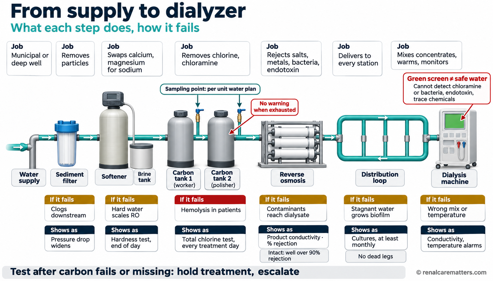
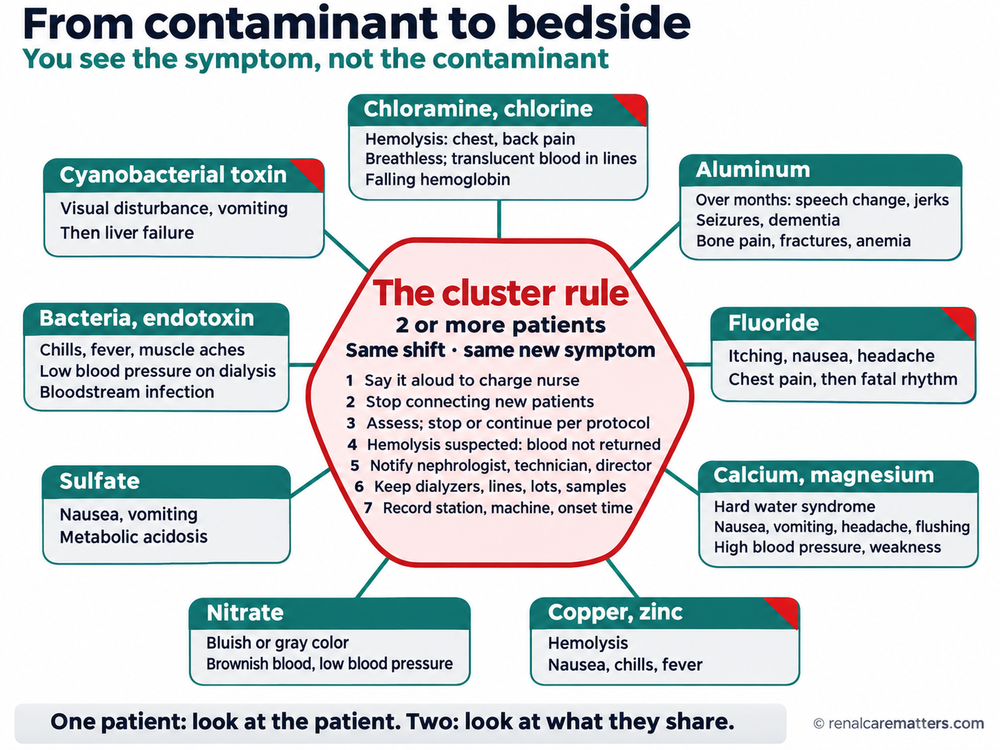
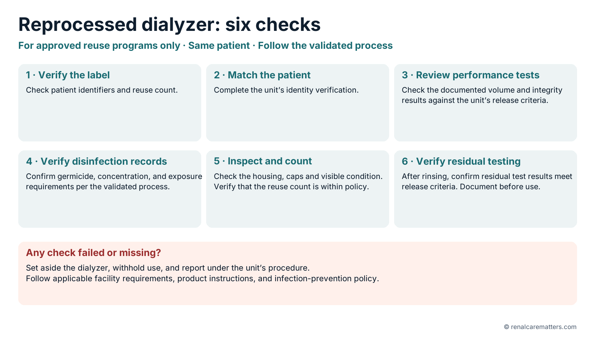

After this module you should be able to
- Trace water from the municipal or deep-well supply to the dialyzer and state what each treatment stage removes.
- Explain why chlorine and chloramine are dangerous in dialysis water and how carbon treatment is verified.
- Distinguish chemical from microbial hazards and state how each is monitored.
- Explain what dialysate conductivity and temperature monitoring detect, and what they do not.
- Apply release criteria: hold treatment when a required test fails or is missing, and escalate.
- Perform and document pre-treatment machine and circuit safety checks.
- Explain why source water changes over time and why a water system must be verified continuously, not once.
- Match the main water contaminants to the clinical syndromes they cause, and apply the cluster rule when several patients develop the same symptom.
- Interpret dialysate-side machine alarms and state the first response to each.
- Describe the safety checks that surround machine disinfection and dialyzer reprocessing, and the roles of technician, nurse, and medical director in water quality.
Water as a medicine given by the liter
Picture a pharmacy that compounds one medicine in very large doses, on site, every morning. The medicine has ingredients, specifications, quality tests, and a release step before anyone receives it. Dialysis water is that medicine. A healthy person drinks about two liters of water a day, and the gut wall and kidneys stand between that water and the blood. A person on hemodialysis (HD) meets well over 100 liters of water per session, as dialysis fluid, with only a thin synthetic membrane in between and no kidney to clear what crosses.
The picture has a limit. A compounded medicine is tested batch by batch before it leaves the pharmacy. Dialysis water is made continuously, and some of its hazards change by the hour: carbon runs out without warning, and bacteria grow inside the pipes between monthly samples. The machine at the chair cannot see most of these hazards. So release is not a single test. It is a set of checks, each at its own interval, and someone must confirm they were done before the first patient is connected.
Most mornings every check passes. Rarely, one fails or is missing, and contaminants that are harmless in drinking water can then injure every patient on the floor at once. Your work is to know which checks stand between the supply and your patient, to confirm they were done, and to hold treatment when one is missing.
From supply to dialyzer
Follow the water from the tap to the dialyzer. Each stage removes something, and each has its own way of failing.
| Stage | Purpose | What goes wrong if it fails |
|---|---|---|
| Sediment filter | Removes particles | Downstream components clog |
| Softener | Exchanges calcium and magnesium for sodium | Hard water scales and damages the membrane downstream |
| Carbon tanks (two in series) | Adsorb chlorine and chloramine | Hemolysis in patients; damage to the membrane downstream |
| Reverse osmosis | Rejects dissolved salts, metals, bacteria, and endotoxin | Chemical contaminants and microbes reach the dialysate |
| Distribution loop | Delivers treated water to each station | Stagnant sections grow biofilm |
| Dialysis machine | Mixes water with acid and bicarbonate concentrates; warms, degasses, and monitors the dialysate | Wrong composition or temperature reaches the blood |
Why chlorine matters. Water utilities add chlorine or chloramine to keep drinking water free of bacteria. In dialysis the chain runs like this. Chloramine crosses the dialyzer membrane. It oxidizes hemoglobin inside red cells. The damaged cells break apart. Hemolysis releases potassium, and it can be fatal. Reverse osmosis (RO) does not remove chloramine reliably, and chlorine damages the RO membrane itself. So the carbon tanks are the only barrier. Carbon has a finite capacity and gives no warning when it is used up. That is why the test after the carbon tanks is repeated every treatment day, and not assumed from yesterday.
Chemical and microbial hazards are different problems. Chemical contaminants such as aluminum, fluoride, copper, and nitrate come from the source water or the plumbing. Their toxicity may be sudden or may build over months. Bacteria grow inside the system itself, on tank and pipe surfaces. Even when the dialyzer membrane holds the organisms back, fragments of their cell walls, called endotoxin, can cross or stimulate inflammation. The patient then has fever and chills during treatment.
What the machine watches. Dialysate conductivity reflects the total concentration of dissolved ions, mostly sodium. It tells the machine whether water and concentrates were mixed in the right proportion. Temperature is watched because overheated dialysate causes hemolysis and cold dialysate causes shivering. If either goes out of range, the machine diverts dialysate away from the dialyzer. Neither sensor can detect chloramine, bacteria, endotoxin, or trace chemicals.
A machine in full “green” status can be running on unsafe water. The machine checks the mix and the warmth. Only the water tests check the water.
Source water: why last year’s validation does not cover today
A water system is designed and validated against the water that entered it during commissioning. The water that enters it today may be different. Every stage downstream has a fixed capacity. A change at the source can exhaust a stage that worked well for years.
| Source or event | What changes | Consequence for the dialysis unit |
|---|---|---|
| Municipal supply | Already disinfected with chlorine or chloramine. The utility may raise the dose, or switch from one disinfectant to the other, without telling its customers | A carbon bed sized for the old load is exhausted sooner; chloramine is adsorbed more slowly than chlorine and is the harder of the two to remove |
| Deep well | Usually not chlorinated at the source; often hard, and may carry iron, manganese, nitrate from fertilizer or sewage, and a high dissolved-mineral load | Softener and RO work harder; chemical analysis of the raw water matters more; any chlorination added on site becomes the unit’s own responsibility to control |
| Dry season or supply interruption | The utility blends sources, pressure falls, and units buy water delivered by tanker | Tanker water has an unknown origin and unknown treatment; the worst recorded dialysis water disaster involved untreated reservoir water |
| Typhoon or flood | Turbidity, organic matter, and bacteria rise; utilities often respond with heavy extra chlorination | Sediment filters clog, carbon is exhausted early, and the bacterial load reaching the system increases |
| Raw-water storage tank or cistern | Water stands for hours or days, loses its disinfectant, and warms | Bacteria multiply before the water reaches the first filter; an unsealed tank adds debris and insects |
| Pipe repair or new construction nearby | Sediment and metals are released into the main | Sudden particle and chemical load |
The lesson is that safety comes from monitoring that never stops. A unit that passed its chemical analysis six months ago knows what its water was like six months ago. The unit keeps a relationship with its water provider and asks to be told about changes in treatment. Treat these events as reasons to test more often and to tell the technician and the medical director: a typhoon, a flood, a long brownout that stopped the loop, a tanker delivery, or a change in the taste, color, or smell of tap water. If you live in the same district as the unit, you may be the first to notice that the tap water smells strongly of chlorine that week. Bring that observation to the water room, not only to conversation.
The water changes even when the system does not. A typhoon, a tanker, or a strange smell at the tap is a reason to test, and to tell someone.
What each component does, how it fails, and what shows the failure
The table earlier named the stages. This section explains each one well enough for you to read its log sheet with understanding. Many of these tasks belong to the technician. You need to know what a normal entry means and which abnormal entry stops treatment.
Sediment and multimedia filters. Layers of sand and gravel, or cartridge filters, trap particles. As the filter loads, the pressure after it falls relative to the pressure before it. A widening pressure difference is the sign to backwash the bed or change the cartridge. Backwashing runs water backward through the bed to lift out the trapped material. It is timed for hours when no patient is on treatment.
Softener. The tank holds resin beads coated with sodium. Calcium and magnesium bind to the resin more strongly than sodium does. They stay on the beads, and sodium enters the water. When the beads are full, hardness passes through. Regeneration floods the resin with concentrated salt solution (brine), which pushes the calcium and magnesium off to drain and reloads the beads with sodium. Three checks follow. The brine tank must contain salt. The regeneration timer must run outside treatment hours, so that brine never reaches patients. The water after the softener is tested for hardness at the frequency the unit sets. A sample taken at the end of the treatment day tells you most, because the resin is then most depleted. Hard water that escapes the softener scales the RO membrane, which lowers its output and its ability to reject contaminants.
Carbon tanks. Granular activated carbon removes chlorine and chloramine by adsorption and chemical reaction on its surface. Two things decide whether it succeeds: how much unused carbon remains, and how long the water stays in contact with it. The second is the empty-bed contact time, the volume of the carbon bed divided by the water flow rate. Push more water through the same tanks, for example after stations are added, and contact time falls. Chloramine can then pass even through fresh carbon. That is why the tanks are arranged in series. The first tank (the worker) takes most of the load. The second (the polisher) is the reserve. A sampling port after the first tank shows when the worker is exhausted while the polisher still protects patients. A port after the second tank shows what is actually going forward. The unit’s water policy says which port is tested when, and what happens when the first tank fails. Carbon also gives bacteria a rich surface, and it removes the disinfectant that was holding them down. So everything downstream of the carbon depends on RO, on continuous flow, and on disinfection for microbial control.
Reverse osmosis. A pump forces water against a membrane that passes water molecules and holds back most dissolved salts, metals, bacteria, and endotoxin. The cleaned portion is the product water. The remainder carries the rejected material to drain. Two linked readings show performance continuously. The product-water monitor displays conductivity or total dissolved solids. The system also calculates percent rejection, which compares dissolved material in the feed water with what remains in the product. An intact membrane rejects well over 90% of dissolved ions. Falling rejection, or rising product conductivity, means the membrane is scaled, fouled, or damaged, or that the feed water has become more mineralized. Chlorine that passed the carbon is a classic cause of damage. This is an early warning that chemical contaminants are getting through, long before the next laboratory analysis. The alarm limit is set for each system. An alarm is a reason to stop and call, not to silence.
Deionization tanks, where used. Some systems use resin tanks that exchange dissolved ions for hydrogen and hydroxide, as a polishing step or as a temporary substitute when the RO unit is out of service. These tanks carry a hazard that RO does not. Exhausted resin does not simply stop working. It can release ions it captured earlier, at concentrations higher than in the feed water. A fatal outbreak of fluoride poisoning occurred in exactly this way. A deionization tank therefore needs a continuous resistivity monitor with an alarm that keeps exhausted water from reaching patients. It also needs a filter downstream that retains bacteria and endotoxin, because resin beds do not remove microbes and readily grow them.
Ultraviolet lamps and endotoxin-retentive filters. Ultraviolet light kills bacteria passing the lamp but does not remove them, and dead bacteria release endotoxin. A lamp is therefore followed by a filter fine enough to retain bacteria and endotoxin. Lamps lose output with age, and the quartz sleeve around them becomes coated, so lamp hours or intensity are logged. Filters are checked by the pressure difference across them and replaced or disinfected on schedule.
Storage and the distribution loop. Treated water has no disinfectant in it. Its protection against bacteria is movement and regular disinfection. The loop circulates continuously and returns unused water. It is built without dead legs, the capped or rarely used branches where water stands and biofilm forms. An isolation room or a seldom-used station is a typical dead leg. A product-water storage tank, if present, has a tight lid, a filtered air vent, and a base that drains completely. Piping that touches treated water is made of inert material. Copper, brass, galvanized steel, and aluminum are avoided, because pure water dissolves metal from them. A long brownout or a holiday closure that stops the loop is a period of stagnation. The technician decides whether disinfection and testing are needed before patients return.
Each stage has a reading that shows it failing. Know which reading belongs to which stage, and which one stops treatment.

From contaminant to bedside: syndromes and the cluster rule
You will never see a contaminant. You will see a patient with a symptom. The table links the two. Most of this knowledge comes from outbreak reports, and the limits in the standard were set to prevent a repeat.1
| Contaminant | Usual origin | What the patient shows |
|---|---|---|
| Chloramine, chlorine | Utility disinfection; exhausted carbon | Hemolysis: chest or back pain, breathlessness, dark or translucent blood in the lines. With lower, continuing exposure: falling hemoglobin and anemia that does not respond to treatment across many patients |
| Aluminum | Added by some utilities to clear water; aluminum parts | Over months: speech disturbance, muscle jerks, seizures, dementia; bone pain and fractures; small-cell anemia |
| Fluoride | Utility fluoridation; release from exhausted deionization resin | Itching, nausea, headache, chest pain, then fatal heart rhythm disturbance |
| Calcium and magnesium | Hard water passing a failed softener and RO | “Hard water syndrome”: nausea, vomiting, headache, flushing, high blood pressure, weakness and lethargy |
| Copper, zinc | Copper or galvanized pipes, brass fittings, especially with acidic water | Hemolysis, nausea, chills, fever |
| Nitrate | Well water contaminated by fertilizer or sewage | Methemoglobinemia: bluish or gray color with brownish blood, low blood pressure, nausea |
| Sulfate | Source water | Nausea, vomiting, metabolic acidosis |
| Bacteria and endotoxin | Biofilm in tanks, loop, bicarbonate containers, machine fluid path, reprocessed dialyzers | Chills, fever, muscle aches, low blood pressure during treatment; bloodstream infection |
| Cyanobacterial toxin | Algal bloom in a surface reservoir | Visual disturbance, nausea, vomiting, then liver failure |
The last row is the 1996 outbreak in Caruaru, Brazil. Over four days, 116 of 130 patients at one dialysis center had visual disturbance, nausea, and vomiting during treatment. One hundred and one developed acute liver failure, and 50 died. Both of the town’s dialysis centers drew water from the same reservoir. The water for the unaffected center was treated, filtered, and chlorinated. The water for the affected center was not. Toxins made by cyanobacteria were found in that water and in patients’ blood and liver tissue.2 The investigation was an outbreak cohort study, and the link between the water and the deaths is about as direct as evidence gets. The lesson for a Philippine unit that buys tanker water in the dry season or after a typhoon is plain. Water of unknown origin is a clinical risk, and its use is a decision for the medical director, not a logistics matter.
The cluster rule. One patient with chills usually has a patient-level cause, most often a catheter infection. Two or more patients on the same shift with the same new symptom have something in common. What they share is the water, the dialysate, a batch of concentrate or dialyzers, or a reprocessing step. Your reasoning changes at that moment:
- Say it aloud to the charge nurse: “This is the second patient with the same symptom.” Clusters are missed because each nurse sees only one patient.
- Do not connect further patients until the common cause has been considered.
- Assess the affected patients, and stop or continue their treatments as the unit protocol and the physician direct. If hemolysis is suspected, the blood is not returned (Module 9).
- Notify the nephrologist, the technician, and the medical director at once.
- Keep the evidence: dialyzers, lines, concentrate containers with their lot numbers, and samples of water and dialysate collected as the protocol states.
- Record for every patient the station, machine, dialyzer type and reuse number, concentrate lots, and time of onset. The pattern across patients locates the source.
Each patient’s own possible causes are still investigated, with blood cultures where ordered. The rule sets the order of thinking. With a cluster, consider the shared exposure first, because every additional patient connected to it is a new exposure.
One patient with a symptom is a patient problem. Two patients with the same symptom on one shift share an exposure until proven otherwise.

Which standard applies, and what it says
The international reference is the International Organization for Standardization (ISO) 23500 series, whose second edition was published in 2024. Part 3 sets the requirements for dialysis water.1 In the Philippines, the Department of Health (DOH) licensing order and its 2013 implementing guidelines on dialysis water refer to the standards of the Association for the Advancement of Medical Instrumentation. Those standards have since been harmonized with the ISO series. The Philippine Society of Nephrology (PSN) 2024 guidance repeats the local testing schedule.3,4,5 Each facility should state in its water policy which standard and edition it follows. The figures below are the commonly cited values. They are for orientation and do not replace that policy.
| Parameter | Commonly cited limit for dialysis water | Local schedule in DOH and PSN guidance |
|---|---|---|
| Total chlorine after the carbon tanks | No more than 0.1 mg/L | Before treatment begins each day, and through the day as the unit policy states |
| Bacteria | Below 100 colony-forming units (CFU) per mL; act at 50 | At least monthly |
| Endotoxin | Below 0.25 endotoxin units (EU) per mL; act at half that level | As the facility’s adopted standard requires |
| Chemical contaminants | Individual limits for each contaminant | At least every six months |
These limits do not come from randomized trials, and none could ethically be run. They come from outbreak investigations, toxicology, and engineering consensus. Each includes an “action level” set below the maximum, so that a unit intervenes while the water is still within specification. The evidence that failure causes harm is nonetheless strong, because the harm has been seen directly in outbreaks of hemolysis, aluminum poisoning, and fever reactions. What that evidence does not tell you is the exact safe threshold. The numbers are consensus values with a safety margin built in.
The limits are consensus values, but the harm they guard against has been seen directly. Treat a failed or missing test as a real hazard, not a paperwork gap.
Microbiological monitoring, trends, and who is responsible for what
Why the method matters. The bacteria that live in purified water are adapted to cold, nutrient-poor conditions. Cultured on rich hospital media at body temperature for two days, many fail to grow, and the result looks falsely reassuring. The dialysis water standard therefore specifies low-nutrient culture media incubated at a low temperature for several days. It also requires a separate assay for endotoxin, because endotoxin can be high when the bacterial count is low.1 A laboratory that does not use a dialysis-appropriate method can report “no growth” on water that is out of specification. You do not perform the culture. You can ask whether the laboratory uses the method named in the unit’s adopted standard.
How samples are collected. The principles are the same whoever collects them:
- Samples come from designated sample ports chosen to represent what patients receive: typically where the loop begins and ends, at outlets that feed machines, and where water is used for reprocessing or for mixing concentrate. The unit’s water plan lists them.
- The port is opened and allowed to run before collecting, so that the sample represents water flowing in the loop and not water standing in the port.
- Collection is aseptic, into sterile, endotoxin-free containers, without touching the inside of the cap or the stream.
- Samples are taken at the point in the disinfection cycle that the plan specifies. A sample taken immediately after disinfection shows the system at its best and hides a problem.
- Samples reach the laboratory promptly, or are refrigerated as the laboratory instructs, because bacteria multiply in a warm sample during transport.
- Each sample is labeled with site, date, time, and collector.
Trending and the action level. Philippine guidance requires bacteriological testing at least monthly and chemical analysis at least every six months.4,5 A single result is a snapshot. The series is the information. A count that rises month over month while still within the limit shows biofilm becoming established. Responding then is cheaper and safer. That is the purpose of the action level: a result at or above it starts corrective steps while the water is still acceptable for use. The steps include disinfecting the loop, looking for a dead leg, and retesting. A result above the maximum limit is a different event. It raises the question of whether treatment continues on that water, and that decision belongs to the medical director under the unit’s policy.
| Role | Typical responsibilities |
|---|---|
| Water technician | Operates and maintains the system; performs daily checks and the total chlorine and hardness tests; backwashes, regenerates, and disinfects; collects samples; keeps the logs; reports any abnormal reading immediately |
| Nurse in charge of the shift | Confirms before the first connection that the required checks are recorded and within limits; holds treatment when they are not; recognizes symptoms that suggest a water or dialysate problem; applies the cluster rule; notifies and documents |
| Staff nurse | Performs machine and dialyzer checks at the station; never overrides a dialysate alarm; reports symptoms and anything unusual about the water or the machine |
| Medical director | Accountable for the quality of water and dialysate; approves the water policy and the adopted standard; reviews results; decides on continuing, suspending, or relocating treatment when limits are exceeded |
| Supplier or biomedical engineer | Preventive maintenance, membrane and media replacement, repairs, and revalidation after changes to the system |
What you must know even when someone else tests. Where the logs are kept, and what a complete day looks like. The unit’s limit and action level for total chlorine, bacteria, and endotoxin. The date and result of the last cultures and chemical analysis. When the loop and the machines were last disinfected. Whom to call, at any hour, when a reading is abnormal.
Documentation and the quality meeting. Water and dialysate results are reviewed at the unit’s regular quality meeting with infection, reaction, and incident data. A rising culture count can then be read beside a rise in fevers during treatment. For each result, record the value, whether it crossed the action level, what was done, who was told, and the retest result. A corrective action without a recorded retest is unfinished.
Delegating a test does not delegate the duty to know it was done. Read the trend, not only the last result.
Release criteria, machine checks, documentation
Release before first use. At the start of each treatment day, someone confirms two things. The water system is running within its normal pressures and readings. The total chlorine test after the carbon tanks has been done, read at the correct time with in-date reagent, and recorded. In many Philippine units a technician performs the test. As the nurse in charge, you remain responsible for knowing it was done before any patient is connected. If the result is above the unit’s action threshold, if the test was not done, or if the log is blank, treatment does not start on that supply. Inform the charge nurse, technician, and nephrologist. Follow the unit’s procedure for retesting and finding the failure, and document the hold. If patients are already dialyzing when a failure is found, stop their treatments as the procedure directs and assess them for hemolysis.
Machine and circuit checks before each patient. The exact sequence belongs to the manufacturer’s manual and the unit procedure. The checks answer a fixed set of questions:
- Has the machine passed its self-test, and is it free of residual disinfectant?
- Are the correct acid and bicarbonate concentrates connected, and do conductivity and temperature read within range? Does an independent check agree, where the unit requires one?
- Is the dialyzer the one prescribed? If reprocessed, does it carry this patient’s name, has it passed its checks, and has residual germicide been tested as absent?
- Is the circuit primed without air, are all connections tight, and are clamps and caps in place?
- Are the air detector, blood-leak detector, and pressure alarms armed, with limits set close to the working pressures and never bypassed?
Documentation is the release. A log entry records that a named person verified a safety barrier at a stated time. An entry made from memory at the end of the shift, or copied from the day before, removes the barrier while appearing to keep it.
If you did not see the result, do not sign for it. If there is no result, no patient is connected.
Dialysate preparation and dialysate-side alarms
Two concentrates, mixed at the machine. Dialysate needs bicarbonate as its buffer, and it also needs calcium and magnesium. At high concentration these cannot share a container, because calcium and magnesium carbonate would precipitate. So they are supplied separately. The acid concentrate holds sodium, potassium, calcium, magnesium, chloride, usually glucose, and a small amount of acid. The bicarbonate concentrate holds sodium bicarbonate. The machine draws each one and dilutes both with treated water in fixed proportions. The small amount of acid keeps the final mixture at a pH where the minerals stay dissolved.
Concentrates must match the machine. Manufacturers use different proportioning ratios, and each concentrate is made for one ratio. A concentrate made for a different ratio produces dialysate of the wrong composition. The conductivity display may not show the error, because conductivity measures total ions and cannot tell which ions they are. Before you connect, read the label for three things. It is the formulation prescribed for this patient, potassium and calcium content in particular. It is made for this machine’s proportioning system. It is in date and intact. Where unit policy requires an independent check of conductivity or pH with a handheld meter or test strip before treatment, that check guards against a machine sensor that has drifted out of calibration.
Bicarbonate concentrate grows bacteria. Acid concentrate is too acidic and too salty to support growth. Bicarbonate solution is neither, and it is an excellent culture medium. It also loses carbon dioxide on standing, which raises its pH. For both reasons, mix bicarbonate fresh or take it from sealed cartridges or bags. Use it within the period the manufacturer and the unit policy allow, and never top it up from one day to the next. Empty, rinse, and disinfect reusable jugs and pickup tubes on the unit’s schedule, and store them dry and inverted. Discard leftover bicarbonate.
Alarms on the dialysate side. When dialysate is out of range, the machine goes into bypass. Dialysate is diverted to drain before it reaches the dialyzer, while the blood pump continues. Bypass protects the patient. Dialysis and fluid removal pause while it lasts, so a long bypass is lost treatment time, and you record it. Clear the alarm by correcting the cause, never by widening limits or overriding.
| Alarm | What it means | Common causes | First response |
|---|---|---|---|
| Conductivity low | Dialysate too dilute. If it reached the blood, water would enter red cells and cause hemolysis | Empty or disconnected concentrate container; pickup tube not seated or kinked; wrong concentrate; proportioning fault | Confirm the machine is in bypass. Check both containers and connections. If the cause is not found and corrected promptly, stop using the machine and call the technician |
| Conductivity high | Dialysate too concentrated. Sodium loading causes thirst, headache, and high blood pressure, and at extremes shrinks cells | Wrong concentrate or connectors exchanged; low water inflow or pressure; proportioning fault | As above. Check the water supply to the machine. Do not resume until readings are stable and, where policy requires, independently confirmed |
| Temperature high or low | Overheated dialysate causes hemolysis; cold dialysate causes chills and shivering | Heater or sensor fault; inlet water temperature or flow problem | Bypass. Assess the patient. Do not resume until the temperature is within range; persistent alarm takes the machine out of service |
| Blood-leak detector | A sensor in the used dialysate has detected what may be blood, from a broken fiber in the dialyzer | Membrane rupture; false alarms from air bubbles or a dirty sensor | Look at the dialysate outflow line. Test the used dialysate with a blood test strip. If a leak is confirmed, treatment through that dialyzer stops; whether the blood is returned depends on the size of the leak and the unit protocol. Never disable the detector |
| Transmembrane pressure high | The machine needs an unusually large pressure difference to achieve the set fluid removal | Clotting fibers; kinked dialysate line; fluid removal rate too high for the dialyzer | Inspect the dialyzer and chambers for clotting and the lines for kinks. Review the fluid removal setting against the order. Report |
| Transmembrane pressure low, or flow error | Pressure or flow on the dialysate side is not as expected | Loose dialyzer connector, leak, air in the dialysate path | Check connectors and look for fluid leaks; call the technician if it recurs |
With every dialysate alarm, look at the patient before the screen. Then ask whether the same alarm is sounding on neighboring machines. The same alarm on several machines points to the water or to a batch of concentrate, and the cluster rule applies.
An alarm is the machine protecting the patient. Correct the cause. Never widen the limit to make the sound stop.
Machine disinfection and dialyzer reprocessing
Inside the machine. The fluid path of a dialysis machine is warm and wet and carries bicarbonate. It will grow biofilm unless it is disinfected regularly. Machines run heat cycles, chemical cycles, or both, at the frequency the manufacturer and the unit policy state. Descaling or acid cleaning removes the carbonate deposits that shelter bacteria and blunt disinfection.
Residual disinfectant testing. A chemical cycle fills the fluid path with a substance that would injure blood if it crossed the membrane. Hemolysis, chest pain, breathlessness, and falling blood pressure have followed treatments begun on a poorly rinsed machine. The rinse cycle is designed to remove the chemical. A brownout, a low water supply, or a person in a hurry can interrupt it. The only proof is a test of the rinse water with the strip made for that chemical. Do it after the rinse and before the dialyzer is primed, and read it at the time the strip’s instructions state. Treat a machine as still containing disinfectant if it shows a chemical-cycle message, was found powered off mid-cycle, or has no recorded test. Rinse it and test again before use.
Outside the machine. Between patients, clean and disinfect the external surfaces of the machine, the chair or bed, the table, and other frequently touched surfaces. Discard items taken to the station, dedicate them to that patient, or disinfect them before they return to a common area. Change pressure transducer protectors if they become wet. A machine whose internal protector may have been contaminated with blood is taken out of service for inspection.6 This is hepatitis prevention as much as tidiness, because hepatitis B virus (HBV) survives on dry surfaces.
Dialyzer reprocessing. Many Philippine units reuse dialyzers, for the same patient only. Reuse is acceptable only as a controlled process. Each check in it answers a specific hazard.
| Step | Hazard it controls | What you verify |
|---|---|---|
| Permanent label with the patient’s full name, a second identifier, and the reuse count | Use on the wrong patient, which exposes the patient to another person’s blood | The label is legible and matches this patient. Two people check it, and the patient is one of them whenever able |
| Fiber-bundle volume test | Loss of clearance as fibers clot. A dialyzer is retired when the volume falls below 80% of its original value | The reprocessing record shows a pass for the last use |
| Pressure or leak test | Broken fibers and blood leak | Recorded pass |
| Germicide fill and storage for the required contact time | Surviving bacteria; pyrogenic reaction or bloodstream infection | Germicide presence test is positive before rinsing, showing the dialyzer was actually filled; storage time is within the limits of the unit procedure |
| Rinse and priming before use | Germicide reaching the patient | Germicide absence test is negative after rinsing, performed as the procedure states and recorded with the tester’s name |
| Inspection | Cracks, clots, discoloration, missing or loose caps | The dialyzer looks clean and intact; if in doubt, it is discarded |
| Maximum number of uses | Membrane fatigue | The count is within unit policy |
The two germicide tests are easily confused, and they answer opposite questions. Presence before rinsing proves disinfection happened. Absence after rinsing proves the patient will not receive the germicide. Both are needed. Residual germicide usually shows itself in the first minutes of treatment: burning along the access vein, chest tightness, breathlessness, or a fall in blood pressure. The response is that of a dialyzer reaction in Module 9.
Patients positive for hepatitis B surface antigen (HBsAg) are excluded from dialyzer reuse programs, because reprocessing their dialyzers exposes staff and shared equipment to a highly infectious virus.6 Unit policy states how patients with other bloodborne infections are handled. The person who reprocesses dialyzers wears protective equipment against both blood and chemical splash, and works in a ventilated room. The site’s reuse guide in the reading list describes the process in full. The unit’s own procedure governs.
Two people, two identifiers, two germicide tests. If any one is missing, the dialyzer does not reach the patient.

Case: A blank line in the log
It is Monday, 6:15 a.m. You are the opening nurse. Six patients are waiting, some after a three-day gap. Among them is Mr. Danilo Cruz, 58, who arrived breathless and 4 kilograms above his dry weight. The water-room log shows Saturday’s total chlorine result but nothing for today. The technician, Mr. Jun Villanueva, tells you, “It is always fine, the carbon was changed last month. I will test it after we start.” Every machine shows normal conductivity and temperature.
Before reading on, decide what you would assess, what you would communicate and to whom, what you would teach, and what would make you escalate. Then compare with the outline below.
Assess
Communicate
Teach
Escalate
Check your understanding
Each visit draws 5 questions at random from this module’s 15-question bank, in a shuffled order. Choose the single best answer for each, then select Check answers; a rationale appears under every option. Reload the page or select New set of questions for a different mix. Nothing you select is sent anywhere; scoring happens in your browser.
What this module builds
Each competency names an observable ability, the level this module aims for, and how that level is confirmed. Levels follow Miller’s pyramid. Self-study reaches knows; the higher levels are reached only when an educator or preceptor verifies them, and they are recorded on the competency checklist.
- Knows Explains the reasoning and applies it to cases. Verified by the self-assessment and the nursing case.
- Shows how Demonstrates the skill in simulation, a skills station, or teach-back. Verified by an educator.
- Does, supervised Performs the task with real patients under direct supervision. Verified by preceptor observation.
- Does, independent Performs the task without direct supervision after preceptor sign-off under the unit’s policy.
| Competency | Thread | Target level | Verified by |
|---|---|---|---|
| Traces the unit water path from supply to dialyzer, naming each component, what it removes, and why changing source water requires continuous verification. | Water, dialysate, and equipment safety | Does, supervised | Observed practice |
| Explains why chlorine and chloramine in dialysis water cause hemolysis and how carbon treatment is verified by total chlorine testing. | Water, dialysate, and equipment safety | Knows | Self-assessment, Nursing case |
| Distinguishes chemical from microbial hazards, matches the main contaminants to their clinical syndromes, and applies the cluster rule when several patients share a symptom. | Water, dialysate, and equipment safety | Knows | Self-assessment, Nursing case |
| Demonstrates a total chlorine test at a skills station, stating the sampling point, reagent expiry check, and read time. | Water, dialysate, and equipment safety | Shows how | Skills station |
| Performs a total chlorine test at the correct sampling point with in-date reagent and correct timing, and records only the result personally read. | Water, dialysate, and equipment safety | Does, supervised | Observed practice, Record review |
| Reads and interprets the water-system log, and identifies a missing, copied, or out-of-range entry before treatment begins. | Quality, safety culture, and improvement | Does, supervised | Observed practice, Record review |
| Holds treatment when a required test fails or is missing, states the unit action threshold, and notifies the charge nurse, technician, and nephrologist. | Water, dialysate, and equipment safety | Does, supervised | Observed practice, Record review |
| Interprets simulated conductivity, temperature, and blood-leak alarms on an unconnected machine, states the first response to each, and explains what conductivity cannot detect. | Water, dialysate, and equipment safety | Shows how | Simulation |
| Completes the pre-treatment machine and circuit checks per the manufacturer’s manual without prompting, including concentrates, alarms armed, and a primed circuit free of air. | Water, dialysate, and equipment safety | Does, supervised | Observed practice, Record review |
| Performs and records the routine pre-treatment machine and circuit safety checks for each patient, and holds the machine when any check fails. | Delivering kidney replacement therapy | Does, independent | Observed practice, Record review |
| Demonstrates the residual-disinfectant or germicide test used in the unit, read at the stated time, before a dialyzer is primed. | Water, dialysate, and equipment safety | Does, supervised | Observed practice |
| Describes the safety checks surrounding machine disinfection and dialyzer reprocessing, and the roles of technician, nurse, and medical director in water quality. | Water, dialysate, and equipment safety | Knows | Self-assessment, Nursing case |
With your preceptor
With the unit technician and your preceptor, in the water room and on an unconnected machine. These are prompts for supervised learning, not a procedure. Your preceptor observes and signs off each item on the unit’s own competency form; the educator page has a printable version.
- Traces the water path and names each component and its purpose.
- Observes, then performs, a total chlorine test at the correct sampling point with correct timing.
- Reads and interprets the water-system log, and identifies a missing or out-of-range entry.
- States the unit’s action threshold, hold procedure, and whom to notify.
- Completes the pre-treatment machine and circuit checks per the manufacturer’s manual without prompting.
- Demonstrates the residual-disinfectant or germicide test used in the unit.
Read next on this site
- Hemodialysis Water Treatment SystemsThe site’s clinical and engineering reference on hemodialysis water treatment. Assigned reading for this module.
- Dialyzer Reuse in Modern TimesReprocessing, germicide testing, and reuse safety.
- Dialysis Center Quality ManagementWhere water monitoring sits in the unit’s quality program.
- Typhoon and Disaster Preparedness for DialysisWater and power interruptions during disasters.
- ISO 23500-3:2024 (standard summary page)Primary source (external site).
- Department of Health order 2013-0003 on dialysis waterPrimary source (external site).